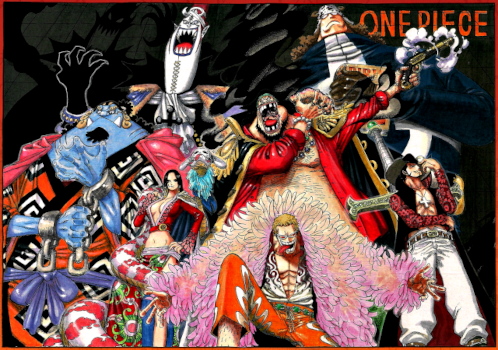

História
Os Shichibukai eram uma aliança de sete piratas que se tornaram corsários à serviço do Governo Mundial. Embora trabalhassem para o Governo Mundial, os próprios Shichibukai normalmente não se preocupavam em respeitar o Governo (exceto Bartholomew Kuma, que mais tarde foi modificado em um fantoche) ou mesmo os outros Shichibukai, e eram frequentemente considerados pelos marinheiros como nada além de piratas comuns. Por outro lado, eles eram vistos como "cães do governo" e eram desprezados por outros piratas, mas ainda eram temidos e respeitados por sua reputação e força infames que ganharam antes de se tornarem Shichibukai.
Os Shichibukai pareciam ser o equilíbrio entre a caoticidade dos Yonkou e a disciplina da Marinha. A maior parte dos Shichibukai era composta por veteranos do Novo Mundo, incluindo membros que conheceram os Yonkou ou até lutaram contra eles.
Como um grupo, eles foram um dos Três Grandes Poderes que mantiveram o equilíbrio do mundo. No entanto, após o Levely mais recente, os países membros do Governo Mundial votaram pela dissolução da organização, resultando nos cinco membros restantes se tornando piratas e inimigos do Governo Mundial mais uma vez.